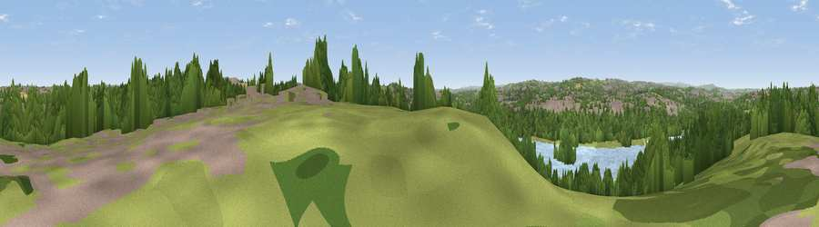

Viewpoint near Wales
#30015 in England · top 53% of its area beats it · near WalesThe view, rendered

A 360° render of this exact spot computed from the terrain model, tree cover and land cover — summer colours, afternoon light, calibrated against photographs of famous viewpoints. Real trees, hedges and buildings will differ in detail.
The panorama
Grey silhouette: terrain skyline in each direction (720 bearings, Earth curvature and refraction included). Dashed green: skyline with trees (+15 m) and buildings (+8 m) as obstacles. Blue strip: how far the ground is visible on each bearing.
Where the view opens
Wedge length = distance to the farthest visible ground on that bearing (vegetation-aware). Rings at 10, 25 and 50 km.
What fills the view
38% woodland · 28% grassland · 16% built-up · 13% water · 5% cropland
Angular shares of the visible panorama (visual magnitude), not map area. Landscape diversity 0.62 (0–1 Shannon).
Key numbers
More beautiful places nearby
The staircase of upgrades: each row has a higher view potential than everything closer. Driving times are estimates from straight-line distance, calibrated against real road routing — check an actual route before setting out.
| Place | Direction | Drive | Score |
|---|---|---|---|
| Viewpoint near Killamarsh | SSE · 2 km | ~6 min | 45.9 |
| Viewpoint near Ridgeway | WSW · 5 km | ~10 min | 50.1 |
| Fir Hill | SE · 5 km | ~11 min | 50.4 |
| Viewpoint near Treeton | NNW · 5 km | ~11 min | 52.8 |
| Viewpoint near Ridgeway | W · 6 km | ~12 min | 67.6 |
| Viewpoint near Maltby | NE · 13 km | ~24 min | 70.8 |
| Viewpoint near Oughtibridge | NW · 17 km | ~30 min | 72.5 |
| Viewpoint near Wharncliffe Side | NW · 19 km | ~33 min | 75.2 |
53.34260, -1.31469 · source: screening · position refined by local search. Computed location — check access rights before visiting.